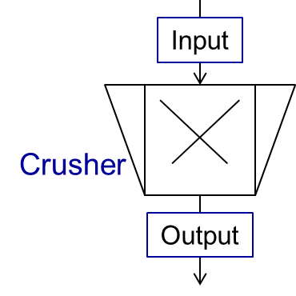

Crusher
A crusher comminutes the input material stream and reduces the average particle size. The schema is illustrated below.
{kind=link}
This unit can be described using 3 models in Dyssol:
Bond’s model
Cone model
Const model
Bond’s model
This model is used to perform milling of the input stream. The crushing is performed according to the model proposed by Bond. The simplification is made, and the particle size distribution of the output stream is described by the normal function.
Note
Notations applied in this model:
\(x_{80,out}\) – characteristic particle size of the output stream
\(x_{80,in}\) – characteristic particle size of the input stream
\(w_i\) – Bond Work Index, dependent on the material
\(P\) – power input
\(\dot{m}\) – mass flow of solids in the input stream
\(q_3(x)\) – output mass related density distribution
\(\sigma\) – standard deviation of the output normal distribution
\(\mu\) – mean value of the output normal distribution
Note
Solid phase and particle size distribution are required for the simulation.
Note
Input parameters needed for the simulation:
Name |
Symbol |
Description |
Units |
Boundaries |
|---|---|---|---|---|
P |
\(P\) |
Power input |
[kW] |
P > 0 |
Wi |
\(w_i\) |
Bond work index |
[kWh/t] |
1 ≤ Wi ≤ 100 |
Standard deviation |
\(\sigma\) |
Standard deviation of the output distribution |
[m] |
Standard deviation > 0 |
See also
a demostration file at Example Flowsheets/Units/Crusher Bond.dlfw.
See also
F.C. Bond, Crushing and grinding calculation – Part I, British Chemical Engineering 6 (6) (1961) 378-385.
F.C. Bond, Crushing and grinding calculation – Part II, British Chemical Engineering 6 (8), (1961) 543-548.
Denver Sala Basic: Selection Guide for Process Equipment, 1993.
Average Bond Work Indices for various materials
Material |
Work Bond Index [kWh/t] |
Material |
Work Bond Index [kWh/t] |
|---|---|---|---|
Andesite |
20.08 |
Iron ore, oolitic |
12.46 |
Barite |
5.2 |
Iron ore, taconite |
16.07 |
Basalt |
18.18 |
Lead ore |
13.09 |
Bauxite |
9.66 |
Lead-zinc ore |
12.02 |
Cement clinker |
14.8 |
Limestone |
14 |
Clay |
6.93 |
Manganese ore |
13.42 |
Coal |
14.3 |
Magnesite |
12.24 |
Coke |
16.84 |
Molybdenum |
14.08 |
Copper ore |
13.99 |
Nickel ore |
15.02 |
Diorite |
22.99 |
Oil shale |
17.43 |
Dolomite |
12.4 |
Phosphate rock |
10.91 |
Emery |
62.45 |
Potash ore |
8.86 |
Feldspar |
11.88 |
Pyrite ore |
9.83 |
Ferro-chrome |
8.4 |
Pyrrhotite ore |
10.53 |
Ferro-manganese |
9.13 |
Quartzite |
10.54 |
Ferro-silicon |
11 |
Quartz |
14.93 |
Flint |
28.78 |
Rutile ore |
13.95 |
Fluorspar |
9.8 |
Shale |
17.46 |
Gabbro |
20.3 |
Silica sand |
15.51 |
Glass |
13.54 |
Silicon carbide |
27.46 |
Gneiss |
22.14 |
Slag |
11.26 |
Gold ore |
16.42 |
Slate |
15.73 |
Granite |
16.64 |
Sodium silicate |
14.74 |
Graphite |
47.92 |
Spodumene ore |
11.41 |
Gravel |
17.67 |
Syenite |
14.44 |
Gypsum rock |
7.4 |
Tin ore |
11.99 |
Iron ore ,hematite |
14.12 |
Titanium ore |
13.56 |
Iron ore, hematite-specular |
15.22 |
Trap rock |
21.25 |
Iron ore, magnetite |
10.97 |
Zinc ore |
12.72 |
Cone model
The model is described below as
Note
Notations:
\(w_{out,i}\) – mass fraction of particles with size \(i\) in output distribution
\(w_{in,i}\) – mass fraction of particles with size \(i\) in inlet distribution
\(S_k\) – mass fraction of particles with size \(k\), which will be crushed
\(B_{ki}\) – mass fraction of particles with size \(i\), which get size after breakage less or equal to \(k\)
\(S_k\) is described by the King selection function.
Note
Notations:
\(x_k\) – mean particle diameter in size-class \(k\)
\(CSS\) – close size setting of a cone crusher
\(\alpha_1, \alpha_2, n\) – parameters of the King selection function
\(B_{ki}\) is calculated by the Vogel breakage function.
Note
Notations:
\(x'\) – minimum fragment size which can be achieved by crushing
\(q\) – parameter of the Vogel breakage function
Note
Solid phase and particle size distribution are required for the simulation.
Note
Input parameters needed for the simulation:
Name |
Symbol |
Description |
Units |
Boundaries |
|---|---|---|---|---|
CSS |
\(CSS\) |
Close size setting of a cone crusher. Parameter of the King selection function |
[m] |
CSS > 0 |
alpha1 |
\(\alpha_1\) |
Parameter of the King selection function |
[–] |
0.5 ≤ alpha1 ≤ 0.95 |
alpha2 |
\(\alpha_2\) |
Parameter of the King selection function |
[–] |
1.7 ≤ alpha2 ≤ 3.5 |
n |
\(n\) |
Parameter of the King selection function |
[–] |
1 ≤ n ≤ 3 |
d’ |
\(x'\) |
Minimum fragment size achieved by crushing. Parameter of the Vogel breakage function |
[m] |
d’ > 0 |
q |
\(q\) |
Parameter of the Vogel breakage function |
[–] |
See also
a demostration file at Example Flowsheets/Units/Crusher Cone.dlfw.
See also
King, R. P., Modeling and simulation of mineral processing systems, Butterworth & Heinemann, Oxford, 2001.
Vogel, L., Peukert, W., Modelling of Grinding in an Air Classifier Mill Based on A Fundamental Material Function, KONA, 21, 2003, 109-120.
Const output model
This model sets a normal distribution with the specified constant parameters to the output stream. Outlet distribution does not depend on the inlet distribution.
Note
Notations:
\(q_3(x)\) – output mass related density distribution
\(\sigma\) – standard deviation of the output normal distribution
\(\mu\) – mean value of the output normal distribution
Note
Solid phase and particle size distribution are required for the simulation.
Note
Input parameters needed for the simulation:
Name |
Symbol |
Description |
Units |
Boundaries |
|---|---|---|---|---|
Mean |
\(\mu\) |
Mean of the normal output distribution |
[m] |
Mean > 0 |
Standard deviation |
\(\sigma\) |
Standard deviation of the normal output distribution |
[m] |
Standard deviation > 0 |
See also
a demostration file at Example Flowsheets/Units/Crusher Const.dlfw.